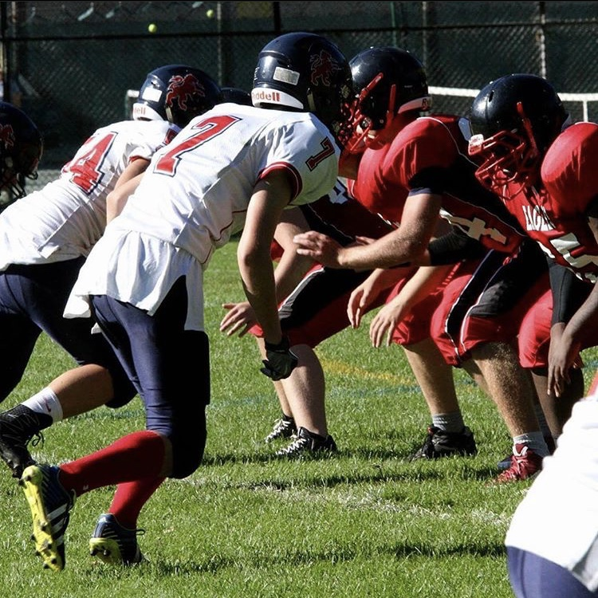

{% extends 'home.html' %}
{% block title %}Sports{% endblock %}
{% block header %}Sports{% endblock %}
{% block subheader %}{% endblock %}
{% block firstpic %}{% endblock %}
{% block first %}
American Football
{% endblock %}
{% block firstpara %}
I played American Football every year of high school. I was a part of the LCC Lions football team
for five years. I played many games and a lot of different position over the years.{% endblock %}
{% block secondpara %}I've played as a linemen for both offense and defence. On defence, I also played free safety, defensive
back and defensive end. On offense I played as a receiver primarily and in my final year as a wingback, which was my
favorite position.{% endblock %}